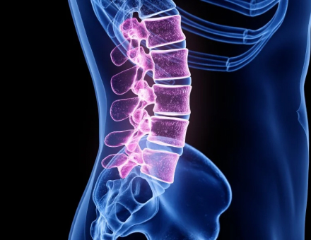

Первые результаты использования вы с удивлением ощутите уже через 10-15 минут !!!
При использовании тренажера ДОКТОР КИПАРИС боли в поясничном отделе проходят, в среднем, за 2 недели, в грудном и шейном за 3-4.


Улучшает состояние при позвоночных грыжах и ущемлении седалищного нерва
Служит профилактикой остеохондроза, радикулита, сколиоза

Восстанавливает питание хрящевой и костной ткани позвоночника

Помогает избавиться от сутулости
Закажи прямо сейчас по скидке
 заказать со скидкой
заказать со скидкой

Цена действительна до 02.02.22 Количество товара ограничено !